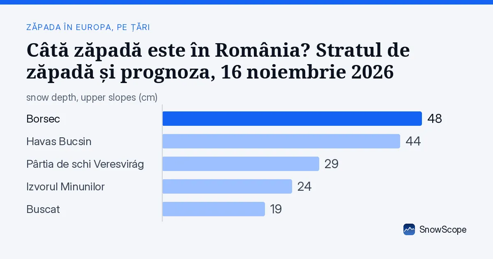

România pierde 6.270 km² de zăpadă într-o săptămână: vârfurile rămân acoperite
Acoperirea cu zăpadă a României a scăzut abrupt în săptămâna trecută, coborând de la 12.900 km² cu șapte zile în urmă la 6.630 km² astazi. Vârfurile cele mai înalte de peste 1.500 de metri păstrează încă zăpadă, cu Retezat, Bucegi și Parâng rămânând albe.
Vezi prognoza de zăpadă pentru Borsec în aplicația SnowScopeGrosimea zăpezii, alerte și harta 3D, gratuit.
O săptămână de topire rapidă
O săptămână de vreme de toamnă a schimbat complet tabloul. Cu șapte zile în urmă, România avea zăpadă pe 12.900 km² de teren. Astazi coboară la 6.630 km²—am pierdut 6.270 km² de acoperire în acea săptămână. Topirea a fost rapidă și neuniformă.
Aerul cald s-a instalat și pantele mai joase și-au pierdut zăpada rapid. Chiar și în munți, zăpada din începutul sezonului este fragilă. Doar ieri, încă 540 km² au dispărut. Acum, doar 10 procent din România este albă. Munții sunt uscați pentru această vreme din noiembrie; când cade zăpadă, nu prea e cine să i se opună.
| Stațiune | Grosimea zăpezii | Zăpadă nouă, 72 h | Zilele următoare | Vârf |
|---|---|---|---|---|
| Borsec | 48 cm | 0 cm | 0 cm | 1.074 m |
| Havas Bucsin | 44 cm | 1 cm | 2 cm | 1.494 m |
| Pârtia de schi Veresvirág | 29 cm | 1 cm | 0 cm | 1.096 m |
| Izvorul Minunilor | 24 cm | 0 cm | 0 cm | 1.363 m |
| Buscat | 19 cm | 0 cm | 0 cm | 1.671 m |

Retragerea acestei săptămâni
Retragerea a fost constantă și accelerată. Săptămâna trecută la această oră am măsurat 12.900 km². Ieri cifra se micșorase la 7.170 km². Astazi vedem 6.630 km². Pierderea nu e uniformă—unele munți înalți câștigă în timp ce terenul mai jos și-o pierde zilnic.
Pierderea de ieri de 540 km² arată cât de repede se pot schimba lucrurile odată ce dezghețul începe. Modelul e clar: zăpada ajunge pe vârfuri, dar se topește repede la altitudine mai scăzută.

Unde ține zăpada pe vârfuri
Terenul cel mai înalt ține. În ultimele 72 de ore, aproximativ 2.270 km² au primit zăpadă proaspătă de 5 centimetri sau mai mult. Munții Retezat, care fac parte din cele mai uscate masive din regiune, au primit 16 centimetri în trei zile. Bucegi a primit 14 centimetri și Parâng 13 centimetri. Aceste vârfuri sunt markeri importanți într-un peisaj uscat.
Douăzeci și șase stațiuni au încă zăpadă evidențiată, din 52 în toată țara. Cele mai multe sunt la altitudine sau cu expunere nordică. Acestea sunt rămășițele primei pulsații a iernii din săptămâna aceasta.
Altitudinea e totul
Altitudinea e totul acum. Sub 1.000 de metri nu e aproape nimic—doar 2 procent din acea fâșie e albă. Sari la 1.000–1.500 de metri și ai o acoperire fragmentară: 14 procent din teren, cu o adâncime medie de 1 centimetru.
Deasupra a 1.500 de metri tabloul se schimbă. Șaptezeci și cinci procent din banda 1.500–2.000 de metri e albă, cu o medie de 3 centimetri. Terenul cel mai înalt, deasupra a 2.000 de metri, e complet acoperit—100 procent alb cu o adâncime medie de 9 centimetri. Linia zăpezii e la 1.500 de metri.
Cea mai bună zăpadă astazi
Dacă vrei să schii acum, caută altitudine. Borsec are cea mai multă zăpadă pe pârtie: 48 de centimetri. Havas Bucsin nu e departe cu 44 de centimetri. Ambele aceste stațiuni sunt sub 1.500 de metri, deci a ține atât în noiembrie devreme e norocul neobișnuit.
Pârtia de schi Veresvirág arată 29 de centimetri, în timp ce Izvorul Minunilor măsoară 24 de centimetri. Chiar și mai jos la Buscat, la 1.671 de metri altitudine, ține 19 centimetri. Niciunul din acestea nu a avut zăpadă proaspătă în ultimii trei zile—ceea ce ține e zăpadă veche din începutul noiembrie, încă se compactează.
Ce arată prognoza
Prognoza oferă puțin optimism. Vineri, 20 noiembrie, se profilează ca ziua cu cea mai multă zăpadă dintre următoarele trei zile, cu până la 4 centimetri așteptați. Pe toată perioada de trei zile ai putea vedea 5 centimetri în total. Pe următoarele șapte zile, sunt posibili până la 13 centimetri.
A doua săptămână a noiembrie—24 până la 30 noiembrie—ar putea aduce încă 10 centimetri. Zăpada din începutul sezonului în aceste munți e subțire și imprevizibilă, dar masa de aer rece care vine ar trebui să ajute la formarea unei baze.
Sfaturi pentru schiori
- Caută altitudine: zăpada stă sigur deasupra a 1.500 de metri; sub aceasta, petele de început sunt subțiri și fragmentate.
- Vizează vârfurile mari: Retezat, Bucegi și Parâng au primit zăpada cea mai recentă și o țin cel mai bine.
- Verifică adâncimile actuale la stațiuni înainte să pleci: Borsec și Havas Bucsin au acum cea mai adâncă acoperire, peste 44 de centimetri.
- Fii pregătit pentru schimbări rapide: în începutul sezonului cu o bază subțire, condițiile se schimbă zi de zi.
- Dacă mergi în afara pârtiei, verifică buletinul oficial de avalanșe pentru regiunea ta.
About these numbers
Resort snow depths are the deepest snow on the resort's upper slopes from the SnowScope snow model (about 1 km, run of 16 noiembrie); they are estimates for an area, not a measurement at one point. Station values are measurements on the date shown. Forecasts can change. Always read the official avalanche bulletin before going off-piste.
Cite this report
For research, teaching or the press: the numbers and charts are free to reuse under CC BY 4.0 with this citation.
SnowScope (2026), România pierde 6.270 km² de zăpadă într-o săptămână: vârfurile rămân acoperite, https://snowscope.app/blog/ro/2026/11/romania-snow-report-16-november-2026.html, accessed 2026-11-16
SnowScope (Atlas Labs). (2026, November 16). România pierde 6.270 km² de zăpadă într-o săptămână: vârfurile rămân acoperite. SnowScope snow reports. https://snowscope.app/blog/ro/2026/11/romania-snow-report-16-november-2026.html
BibTeX
@misc{snowscope2026romaniasnowreport16novem,
author = {{SnowScope (Atlas Labs)}},
title = {România pierde 6.270 km² de zăpadă într-o săptămână: vârfurile rămân acoperite},
year = {2026},
month = nov,
howpublished = {\url{https://snowscope.app/blog/ro/2026/11/romania-snow-report-16-november-2026.html}},
note = {Published 2026-11-16 20:42 UTC; accessed 2026-11-16}
}· CC BY 4.0 · Methods, data and tools →
Borsec: snow and temperature by height, this winter vs last (tools) →
Follow Borsec
Gratuit: un mesaj când vine zăpadă nouă și prognoza în fiecare dimineață.